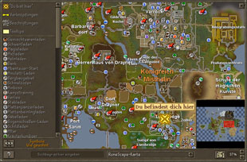
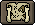
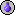
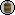
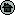

")
Die Weltkarte
Einführung
 Per Klick auf den Globus neben der Minikarte kann man die Weltkarte öffnen. Während eines Kampfs lässt sich die Weltkarte natürlich nicht laden.
Per Klick auf den Globus neben der Minikarte kann man die Weltkarte öffnen. Während eines Kampfs lässt sich die Weltkarte natürlich nicht laden.

Wenn ihr die Weltkarte lieber als Datei auf euren Computer laden wollt, müsst ihr auf unserer Webseite unter 'Community' auf den Link Downloads und Hintergründe klicken.
Wenn die Weltkarte fertig geladen wurde, kann man jeden Teil der Karte betrachten, indem man die linke Maustaste gedrückt hält und dann den Mauszeiger über die Weltkarte zieht. Wenn man den gewünschten Bereich auf der Karte erreicht hat, kann man die Maustaste wieder loslassen. Ihr könnt auch die Pfeiltasten benutzen, um die Karte zu bewegen.
Am unteren Rand der Weltkarte gibt es verschiedene Schaltflächen.
 Legende |
Diese Schaltfläche liegt ganz links. Wenn man auf sie klickt, erscheint eine graue Liste, die Symbole für bestimmte Orte im Spiel enthält. Ein Klick auf jedes dieser Symbole zeigt mit gelben Kreisen, die kurz aufblinken, die zugehörigen Gebäude oder Orte auf der Weltkarte an. Es gibt auch Optionen, mit denen man einige Features der Karte an- und abstellen kann. |
Suchen |
Wenn ihr den Namen eines Orts in die Suche eintippt, bewegt sich die Karte automatisch zu dem angegebenen Ort. Wenn es mehrere Ortsnamen mit dem gleichen Wortanfang gibt, müsst ihr den Namen so lange vervollständigen, bis die gewünschte Stelle angezeigt wird. |
Karten |
Die Karte lädt automatisch eine Ansicht eurer aktuellen Position, auch wenn ihr euch in einem Verlies befindet (mit einigen wenigen Ausnahmen). Aus dieser Liste könnt ihr bei Bedarf eine andere Kartenansicht auswählen. Als Alternative kann man auf jedes Symbol mit einem Pfeil klicken, um die dazugehörige Karte zu öffnen: |
 Übersicht |
Klickt hier, um eine Minikarte von ganz RuneScape zu öffnen. Ihr könnt euch schnell durch die Weltkarte bewegen, indem ihr auf einen Punkt in der Übersichtskarte klickt, oder das rote Quadrat mit der Maus über die Übersicht zieht. Das rote Rechteck in der Übersicht zeigt den Bereich, den ihr gerade auf der Hauptkarte seht. Diese Übersichtskarte eignet sich gut dazu, anhand der Legende nach Orten zu suchen. Wenn man auf ein Symbol in der Legende klickt, blinken gelbe Kreise in der Weltkarte auf. Liegt der Ort jedoch außerhalb des Bereichs, den man gerade betrachtet, dann sieht man die gelben Kreise nicht. Schaut man andererseits auf die Übersicht, dann kann man die gelben Kreise immer sehen. |
 Zoom |
Es gibt fünf Zoom-Schaltflächen - 37 %, 50 %, 75 %, 100 % und 200 %. Ein Klick auf jede von ihnen zoomt die Weltkarte auf den entsprechenden Maßstab. Dadurch erhält man entweder einen besseren Überblick oder eine detailliertere Ansicht. Wenn eure Maus ein Mausrad besitzt, könnt ihr den Zoom auch darüber vergrößern oder verkleinern. |
Minikarten-Symbole
Wenn ihr eine neue Stadt oder ein neues Dorf betretet, solltet ihr immer wissen, was euch dort erwartet. Ein Blick auf die Minikarte zeigt euch, was es für Gebäude in dieser Stadt gibt, also wird es euch sehr helfen, wenn ihr wisst, was die einzelnen Symbole auf der Minikarte bedeuten:
Aufgabenliste
Abkürzung
Gewandtheits-Training
Altar
Amulettladen
Amboss

Apotheke
Apotheke
Bognereiladen
Bank
Brauerei
Kerzenladen
Kettenrüstungsladen
Kleiderladen
Kampf-Training
Herd
Kochutensilienladen
Handwerksladen

Butterfass
Butterfass
Spaß für zwischendurch
Verlies

Immobilienmakler
Immobilienmakler
Landwirtschafts-Parzelle
Landwirtschaftsladen
Angelladen
Angelplatz
Lebensmittelladen
Fellhändler
Schmelzofen
Edelsteinladen
Gemischtwarenladen
Große Markthalle
Ratgeber
Friseur
Axtladen
Helmladen
Kräuterhändler
Hausportal
Jagdgebiet
Jagdladen
Schmuckhändler
Kebab-Verkäufer
Webstuhl
Streitkolbenladen
Magieladen
Schönheitsmagier
Minispiel
Bergbauladen
Bergbaugebiet
Plattenpanzerladen
Plattenbeinlingsladen
Plattenrockladen
Töpferscheibe
Kneipe
Abenteuer-Start
Seltene Bäume
Rastplatz
Sandgrube
Sägemühle
Krummsäbelladen
Schildladen
Seidenhändler
Silberladen
Berserker-Meister
Mini-Obelisk
Gewürzladen
Spinnrad
Stabladen
Beschwörungs-Obelisk
Beschwörungsladen
Schwertladen
Gerberei
Beförderungsmittel
Gemüseladen
Wasserquelle
Windmühle

Weitere Artikel in Steuerung
|
|
|
Weiterführende Informationen Wenn euch dieser Artikel nicht weitergeholfen hat, könnt ihr in den folgenden Kapiteln der RuneScape-Webseite mehr Informationen finden:
|
|